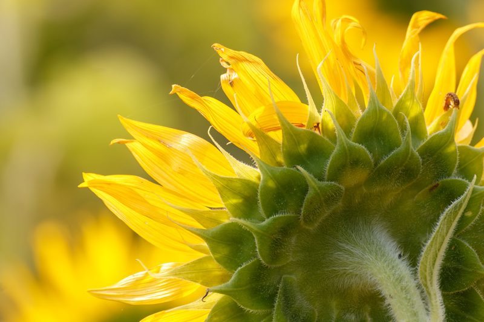
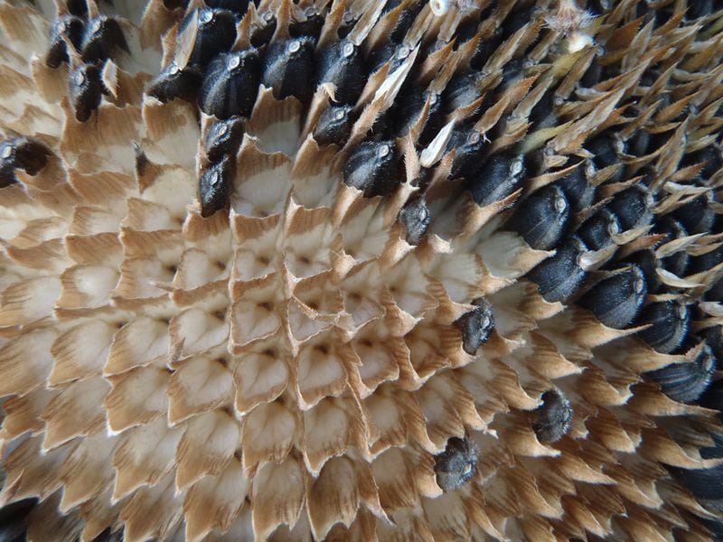
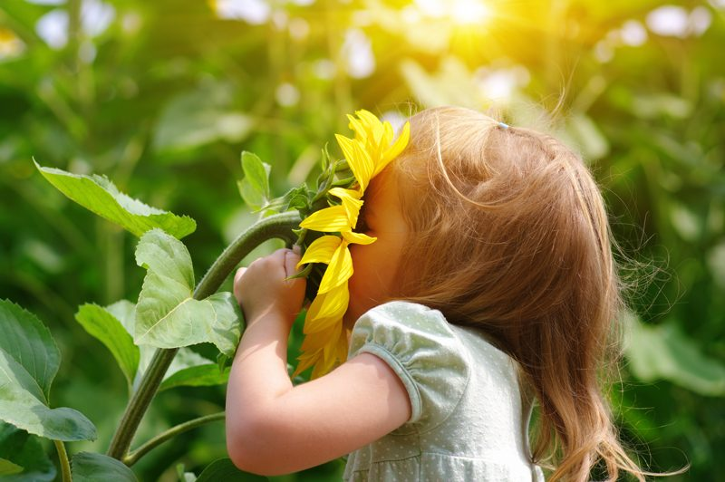
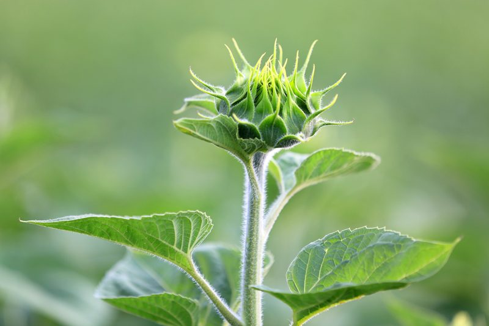

Sunflowers – Sun Trackers
I remember as a little girl, riding around on my bike with a mouth full of sunflower seeds. I looked like a squirrel with her cheeks poofed out. With great precision, I would hold all the sunflower seeds (in their shells) in the pocket of one cheek; then with my tongue, I would transfer one seed at a time to the other side of my mouth. From there I would skillfully crack the seed with my teeth, maneuver the seed itself from the shell, spit the shell out, and eat the seed.

“Hey, everyone look over here. It’s picture taking time.” Have you ever looked at a field of sunflowers and noticed that they are all facing the same direction? Do they know something we don’t? Let’s find out!
I bet that you never noticed that sunflowers face the sun as it rises in the east and then follows it across the sky until it sets in the west. So why do young flowers move their blooms to always face the sun over the course of a day? It’s called heliotropism. They are known to synchronize themselves with the light in their surroundings. This is known as circadian rhythm, which is the same behavioral changes tied to an internal clock that we humans have. A young flower faces east at dawn and greets the sun, then slowly turns west as the sun moves across the sky. During the night, it slowly turns back east to begin the cycle again.
But Why Amie Sue?
Each sunflower plant has only one flower on its stem; therefore, during pollination, it is essential that the plant’s only means of reproducing gets noticed by pollinators (mainly insects). By following the sun, the flowers heat up which gives them an advantage in pollination as warm flowers attract insects. There is another reason as well.
Ever Heard of the Auxin Hormone?
The sunflower plant contains hormones called auxins. These hormones are sensitive to sunlight. Therefore, they seek shade. This causes them to migrate away from the part of the plant that to in sunlight. Once in position, the auxins (think growth hormones) stimulate the growth of cells. This in return causes the stem to become bulkier in the shaded region, so the flower ends up bending in the opposite direction, towards the glorious sunshine. (1)

And I bet you never noticed that when sunflowers reach maturity, they stop tracking the sun and only face east. As the sunflower matures and starts to develop seeds, it stops displaying heliotropism. And as the seeds in the center of the flower grow, it causes the flower head to droop from the weight of these seeds. They end up mostly facing east from this point on in their lifecycle.
Fun Facts
- The sunflower stalk can grow up to thirteen feet.
- The center of the flower that houses the seeds can hold as many as one pound of seeds.
- Due to its deep roots and ability to soak up water and harmful substances, sunflowers are often used for the drying of wetlands and cleaning of contaminated soil: wastewaters, lead, and radioactive substances.
- The leaves are large, individual, with long stems, and heart-shaped. The stem usually develops 20-25 leaves.
Harvesting … It’s all about Timing
When it comes to harvesting, there is a battle between us and birds, squirrels, field mice, and deer. It seems that it is a fun pastime for many. To beat the local critters, it is important to know when to harvest sunflowers. It boils down to timing. If you pick the sunflower heads before the proper time, the seeds will have little meat. Wait too long to harvest sunflowers, and the tender seeds will be too dry.
Wait until the critters start showing interest and there’ll be nothing left for you! It’s best to harvest sunflowers when their petals become dry and begin to fall. The green base of the head will turn yellow and eventually brown. Seeds will look plump, and the seed coats will be fully black or black and white stripes depending on the variety.
When it comes to removing the seeds, wait until they are fully ripened and just beginning to loosen from the head. Simply cut the stem about one inch below the head and briskly rub the seeds from the head with your hand, blow off the chaff and allow the seeds to dry before storing.

Uses of the WHOLE Sunflower
Sunflower oil
- Oil is made of two types of seed: small black seeds that deliver high-quality oil and large grayish-black seeds with white stripes that are used for food.
- When it comes to the use of sunflower seed oil, it is best to use cold-pressed oil in the preparation of salads or vegetables.
- It is used in industry for making paints and cosmetics.
Sunflower Seeds
- Of course, they are enjoyed as is… there is one light gray seed in each shell that is rich in herbal oils, vitamins, proteins, and minerals.
- The seeds can be ground into a flour when making raw cakes, cookies, etc.
- Whole, the seeds are great to sprinkle on salads and are perfect for trail mixes.
- Looking to replace peanut butter? You can make sunflower seed butter at home in your blender.
Seed Cake (flower head)
- In some countries, the seed cake that is left after the oil is extracted is given to livestock as food.
The Hulls
- In the Soviet Union, the hulls are used for manufacturing ethyl alcohol, inlining for plywood, and growing yeast.
The Stalks
- The dried stems have also been used for fuel.
- The stems contain phosphorous and potassium which can be composted and returned to the soil as fertilizer.
- The Chinese have used the fiber from stems for fabrics and paper.
The Petals
- The sunflower petals are used in herbal medicine for the preparation of tea and tincture; it has a bitter and strong flavor and the smell of honey.
- The petals can be used as a sprinkle for salads, just make sure they don’t have sprays on them.

Sometimes we need to just stop and smell the flowers.

A young sunflower just waiting to blossom!
© AmieSue.com